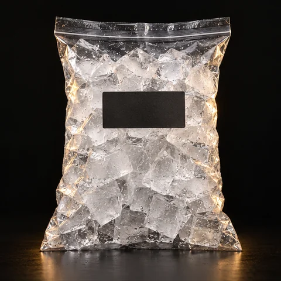

Saco · 3 kg
ValoresSob consulta
Toque na imagem para saber maisOs detalhes do seu encontro
Gelo para o copo, carvão para a brasa e petiscos para acompanhar a conversa. Complete sua seleção.

Saco · 3 kg
Saco · 3 kg
Pacote · 150 g
Pacote · 100 g
Tente outro nome ou explore uma categoria diferente.
Separe os complementos para os seus drinks, para a mesa de petiscos ou para o churrasco. Ajuste as quantidades na sua lista antes de consultar a loja.
Toque no botão de adicionar, ajuste as quantidades em “Minha lista” e copie a seleção para consultar valores, marcas e disponibilidade.
Uma seleção completa
Copie sua lista e consulte os valores e a disponibilidade com a loja.
Selecione o texto abaixo para copiar a sua lista.